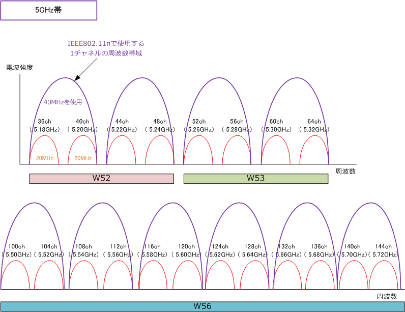
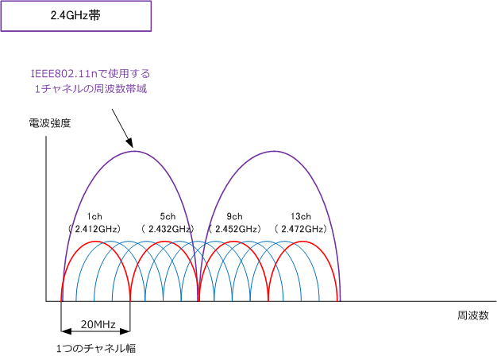
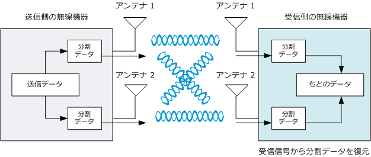

802.11n - Wi-Fi 4
IEEE802.11n（Wi-Fi 4）とは
IEEE802.11nは、理論上600Mbps、スループットで100Mbpsを実現する2009年9月策定の無線LAN規格。 IEEE802.11nでは、チャネルボンディングとMIMOという大きく2つの技術により高速化を実現しています。 先ずはIEEE802.11nの仕様を確認してみましょう。IEEE802.11n の場合は1つの規格であるにも関わらず 2.4GHz帯と5GHz帯の2つの周波数帯域を利用することができるので、下表では一部を分離して記載します。 ※ IEEE802.11n 通信を行う際には無線LAN端末/アクセスポイントの暗号化をAESにする必要があります。
| 無線LANの伝送規格 | IEEE802.11n | |
|---|---|---|
| 周波数帯域 | 2.4 GHz帯 | 5 GHz帯 |
| 同時使用チャネル数 | 2ch | 9 ch |
| 利用可能チャネル数 | 13 ch | 19 ch |
| 最大伝送速度 | 600Mbps ※1 | |
| 無線アクセス方式 | OFDM | |
| 屋外での利用 | △ | |
| IEEE802.11bとの互換性 | ○ | |
| 策定時期 | 2009年9月 |
※1 40MHzのチャネルボンディングを行い、さらに4つのアンテナ（4ストリーム）を使用した場合、理論上最大で600Mbpsの速度。
IEEE802.11n - チャネルボンディングとは
チャネルボンディングとは、無線LANで使用する周波数帯域において、隣り合う2つのチャネルを束ねて 通信する技術のことです。IEEE802.11a /g では1つのチャネルが使用する帯域は20MHzでありましたが IEEE802.11nでは2チャネル分の40MHzで通信することにより、伝送速度を2倍以上になります。例えば、
IEEE802.11aで36chは周波数5.18GHz、40chは周波数5.20GHzなので、5.20GHz － 5.18GHz により IEEE802.11aが１つのチャネルで使用する帯域が20MHzであることが分かります。そして 802.11n では 下図のようにこれらの2つのチャネルを束ねて40MHzの帯域として使用できるので、高速化が実現します。

上図の通り、IEEE802.11nで周波数を5GHz帯を使用すると、最大同時チャネルが9であることが分かります。 一方で下図の通り、IEEE802.11nで周波数を2.4GHz帯を使用すると、最大同時チャネルが2だと分かります。 つまりIEEE802.11nにおけるチャネル設計では企業ネットワークでは5GHz帯を使用することが推奨されます。

※ 2.4GHzにおける40MHzのチャネルボンディングは他のAPの干渉を受けやすくなり、むしろ電波品質が 劣化してしまう可能性があるため、Ciscoの無線LAN製品ではサポートしていませんが、MIMOやフレーム アグリゲーションの実装により、2.4GHzにおける11nでも高速通信を実現します。（5GHzよりは遅いです）
IEEE802.11n対応クライアントと、IEEE802.11n非対応クライアントが混在する環境では、802.11n対応クライアントは5GHz帯を 使用するように設計し、802.11n非対応クライアントは2.4GHz帯を使用するよう設計する事が推奨。パフォーマンスが向上します。
IEEE802.11n - MIMOとは
MIMO (Multiple Input Multiple Output) とは、複数のアンテナを使用してデータを同時伝送することで 無線通信を高速化させる技術です。たとえば、下図では送信側、受信側の無線LAN機器において、ともに 2つのアンテナがあるとします。送信側の機器でデータを2分割して、2つのアンテナでその分割データを 送信します。受信側の機器はその分割データを2つのアンテナで受信してそれをもとにデータに復元します。
このように複数のアンテナを使用することで生じる複数の経路を1つの伝送路として見なして、データを 送受信することで高速化を実現しているので、アンテナの数が多ければ多いほど伝送速度が速くなります。

アンテナといっても、例えば無線LANクライアントになるノートPCに内蔵されたものは、とても小型ですから 最近のものでは、例えばAdvanced-N + WiMAX 6250のIntelのチップには2本（ 2×2 ）も搭載されています。 「2×2」というのは「送信用アンテナ2本、受信用アンテナ2本」という意味です。アンテナが2本ある場合は 2つのデータの通信路（ストリーム）を形成することができるのでストリーム数は「2ストリーム」と言います。
IEEE802.11n - 通信速度 ( なぜ製品により理論上の最大速度がバラバラなのか ）
802.11n規格に準じた製品といえど、製品によってチャネルボンディングに対応していなかったり、つまり 使用する周波数帯域（20MHzなのか40MHzなのか）が異なったり、製品によってアンテナの数が異なるので ストリーム数が異なったりすることで、製品により理論上の最大通信速度が異なります。40MHzを使用する ようにチャネルボンディングに対応した製品は多いですが、アンテナ4つ実装したアクセスポイントは少ない ことから、一般的に300Mbpsくらいの理論上の最大通信速度を実現する無線LAN機器が主流と言えるでしょう。
| IEEE802.11nの理論上の最大伝送速度 | ||
|---|---|---|
| ストリーム数 | 20MHz使用 | 40MHz使用 |
| 1ストリーム （ 1×1 ） | 72.2Mbps | 150Mbps |
| 2ストリーム （ 2×2 ） | 144.4Mbps | 300Mbps |
| 3ストリーム （ 3×3 ） | 216.7Mbps | 450Mbps |
| 4ストリーム （ 4×4 ） | 288.9Mbps | 600Mbps |
IEEE802.11nでも、上図の「1ストリーム」と「20MHz使用」の場合では、アンテナが1つであることと、 チャネルボンディングも行っていない点から、802.11aやgと全く同じ通信状態なわけですが、54Mbpsでは なく72.2Mbpsを理論上の最大伝送速度が実現します。理由はMIMOやチャネルボンディング以外の802.11n における高速化の技術で実現できるからです。802.11nでは、例えばデータ送信の間の時間短縮を行えます。
IEEE802.11n - 高速化を実現するために
?@ IEEE802.11n の規格どおり、暗号化にはAESを採用する。
?A IEEE802.11n ネットワークでは、11n 非対応のWLAN端末を存在させないようにする。 ※ 11n 環境で、11n非対応のWLAN端末が通信を開始すると、11n対応のクライアントPCの速度は低下する。
?B IEEE802.11n ネットワークには5GHz帯を使用するようにして、チャネルボンディングを行うようにする。
?C IEEE802.11n ネットワークでは、11n 非対応のWLAN端末が存在する場合、802.11n対応クライアントを 5GHz帯を使用させるようにして、11n非対応のクライアントに2.4GHz帯を使用させるようSSID設計する。